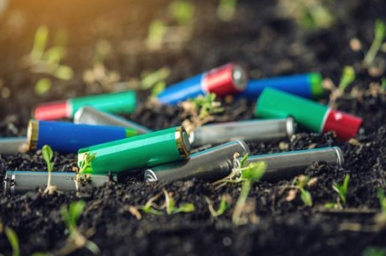

| Descripcion | Historia | Desarrollo | Propuestas para mejorar |
|---|
La chatarra electrónica, desechos electrónicos o basura tecnológica es la basura de dispositivos eléctricos o electrónicos desechados como lo es el Plomo,Cadmio, Componente de la basura electrónica, entre muchos otros
El Instituto Nacional de Ecología estima que el volumen de desechos se incrementó 167% entre 1998 y 2006. Actualmente, se estima que en México se generan entre 150 mil y 180 mil toneladas por añ cifra que equivale a llenar hasta cinco veces el Estadio Azteca, lo que muestra la magnitud del problema

Los aparatos electrónicos provocan una enorme contaminación atribuida al tipo de sustancias que se utilizan en su fabricación. En la manufactura de las computadoras y electrodomésticos se emplean frecuentemente dos grupos de sustancias que son nocivas para la salud humana y para el ambiente: los compuestos orgánicos policromados, llamados también retardadores de flama (bifeniles polibro minados o éter difenil hexavalente), que se usan como aditivos en los plásticos, y metales pesados como plomo, mercurio, cadmio y cromo en la elaboración de los dispositivos electrónicos. Además, contienen oro y arsénico, por lo que la contaminación por residuos electrónicos está alcanzando una magnitud alarmante.
| Lista de propuestas |
|---|
| 1. Haz un consumo responsable |
| 2. Dale una segunda vida: regálalo o arréglalo |
| 3. Y si no, recicla |
| 4. Elige aparatos duraderos |
Si desea ver una imagenes como referencia selecciones el siguiente link
Imagenes de referenciaLista de correos de los Integrantes
Creditos: Amy Carolina Garcia, Cecila Almaraz Urias, Dario Cortez Vazquez, Genesis Balderas Montes
Ultima Actualizacion: 03/06/22 20:19